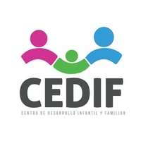

ContactoAcompañamiento terapéutico para niños, niñas, adolescentes y sus familias, con un equipo multidisciplinario, ético y basado en evidencia.
Llamar al centroOfrecen evaluaciones diagnósticas, psicoterapia, intervención sensorial, apoyo educativo, abordaje de la alimentación selectiva, visitas escolares y capacitaciones, en modalidad individual o grupal.
Primera Transversal 1937, Maipú
Lunes a sábado, desde las 9:00 hasta cerca de las 20:15
Domingo cerrado